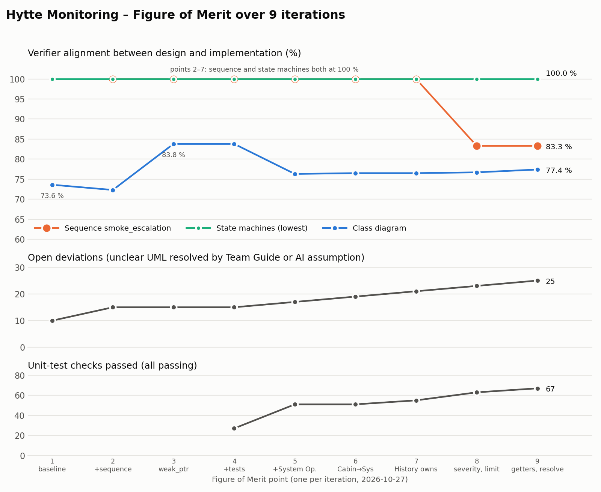

What this website is for
Dashboard
Connect a micro:bit and watch the cabin live: the mode, active Incidents, the full Incident/Event History, and how fast the board reacts.
Install firmware
Put our program on your own micro:bit in four steps. You only do it once.
This page
Explains what the system was designed to do, what the micro:bit version really does, and how we built and checked it.
How it works
- micro:bitButtons and shaking are the "sensors"; the LED screen shows the state. Our cabin model runs on the board.
- USB cableThe board sends one short text line for every change.
- Your browserThe dashboard reads the lines through WebSerial (Chrome, Edge or Firefox 151+).
- Browser databaseEvery Incident is stored in your browser and updated as it changes.
There is no server. GitHub Pages only sends the page files; everything else happens on your own computer, so each person's history stays in their own browser.
Try it on the board
- A + B switch between HOME and AWAY
- A the door opens: a Warning in AWAY, ignored in HOME
- shake smoke: a Critical Incident in any mode
- B the owner marks the newest active Incident as resolved
What the LEDs show
- ? no mode chosen yet · H HOME · A AWAY
- blinking ! a Warning is active
- whole screen flashing: a Critical Incident is active (it always wins over a Warning)
- a tick: an Incident was just resolved
What it was designed to do
In the first assignment we designed a full monitoring system for a Norwegian cabin (hytte), with five UML diagrams, two architecture decisions and a team guide.
Temperature and water
Indoor and outdoor temperature and water leaks. When it gets cold outside, frost protection switches itself on and indoor temperature and power monitoring become mandatory.
Power and connection
Power cuts and lost Internet, with battery backup and a mobile (SIM) connection as fallback, so monitoring never stops.
Safety and security
Smoke, doors and motion, with HOME and AWAY modes. Incidents are Warnings or Critical, and go from the owner to family contacts to the emergency services if nobody responds.
Designed vs. built
For the second assignment the design had to run on a microcontroller. A micro:bit has two buttons, a motion sensor, a 5×5 LED screen and a USB cable, and no smoke detector, thermometer probe, battery backup or SIM card. So we kept the whole design in the software model and connected only what the board can do.
| Part of the design | Designed (full system) | Built (micro:bit) |
|---|---|---|
| Sensors | 8: smoke, indoor and outdoor temperature, water leak, door, motion, power, Internet | 2 on the board button A is the door, shaking is smoke. The other 6 exist only in the software model |
| HOME / AWAY | Door and motion only matter in AWAY | Works buttons A+B switch mode; the door is ignored in HOME |
| Incidents | Warning or Critical; a Warning can be upgraded to Critical as the same Incident | Works door gives a Warning, smoke a Critical. The upgrade is in the model and the tests, but no button triggers it |
| Owner response | Resolved / Not resolved, with suggested next steps | Partly button B resolves the newest active Incident; no next-step guidance |
| Escalation | Owner, then family contacts, then emergency services, with waiting times | Simulated the model "notifies" a contact, but no SMS, calls or timers |
| Frost protection | Outdoor temperature switches it on | Model only in the software and the tests; no thermometer is connected |
| Battery and SIM fallback | Keeps monitoring through power and Internet cuts | Model only in the software and the tests; no battery or SIM |
| History | Every Incident stored and updated in one record | Works the board keeps the latest 20; the browser database keeps everything |
| Notifications | Phone notifications to the owner and contacts | Not built the LED screen and the dashboard show it instead |
How we built it
1. Design first
We drew the system as UML diagrams (class, state machine, sequence) and wrote down the rules. The design is the ground truth.
2. AI writes the code
An AI coding assistant turned the diagrams into C++ following strict mapping rules. The same code runs on the PC (for tests) and on the micro:bit.
3. A tool checks it
A verifier reads the design back out of the code and compares it with our diagrams, every time. Gaps and our decisions about them are logged.

Everything, including the design, the code, the reports and a step-by-step log, is in our GitHub repository.
Try it yourself
You need a BBC micro:bit v2, a USB cable and Chrome, Edge or Firefox 151+ on a computer.